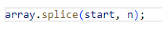

Array, hay được gọi là mảng, là kiểu dữ liệu mà giá trị của nó chứa nhiều giá trị khác. Mỗi giá trị của mảng được gọi là element (phần tử). Ví dụ:
length: Là thuộc tính đưa ra độ dài của mảng. Nếu bạn dùng một số nguyên âm, số thực hoặc một chuỗi làm chỉ mục thì độ dài của mảng cũng là một số nguyên dương cao nhất. Ví dụ:
Trong JavaScript. ta có thể khai báo mảng bằng 2 cách.
Trong đó:
Ví dụ: Khai báo mảng gồm các phần tử số
Trong đó:
Ví dụ: Khai báo mảng gồm các phần tử số
Để có thể lấy ra giá trị của một thành phần trong mảng thì chúng ta sử dụng cú pháp sau:
Trong đó:
Ví dụ
Để thêm phần tử vào mảng ta dùng hàm push(). Ví dụ:
Ta có thể thêm 1 hoặc nhiều phần tử vào mảng bằng hàm push(). Phần tử được thêm vào sẽ được đặt vào cuối mảng.
Ngoài ra ta cũng có thể sử dụng hàm splice() để thêm phần tử vào một ví trí bất kỳ trong mảng theo mong muốn. Cú pháp như sau:
Trong đó:
Ví dụ
Để sửa hay thay đổi giá trị của một phần tử trong mảng ta có thể sử dụng cú pháp sau:

Trong đó:
Để xóa một hay nhiều phần tử trong mảng ở vị trí bất kỳ. Ta cũng có thể sử dụng hàm splice(). Cú pháp như sau:
Trong đó:
Ví dụ: